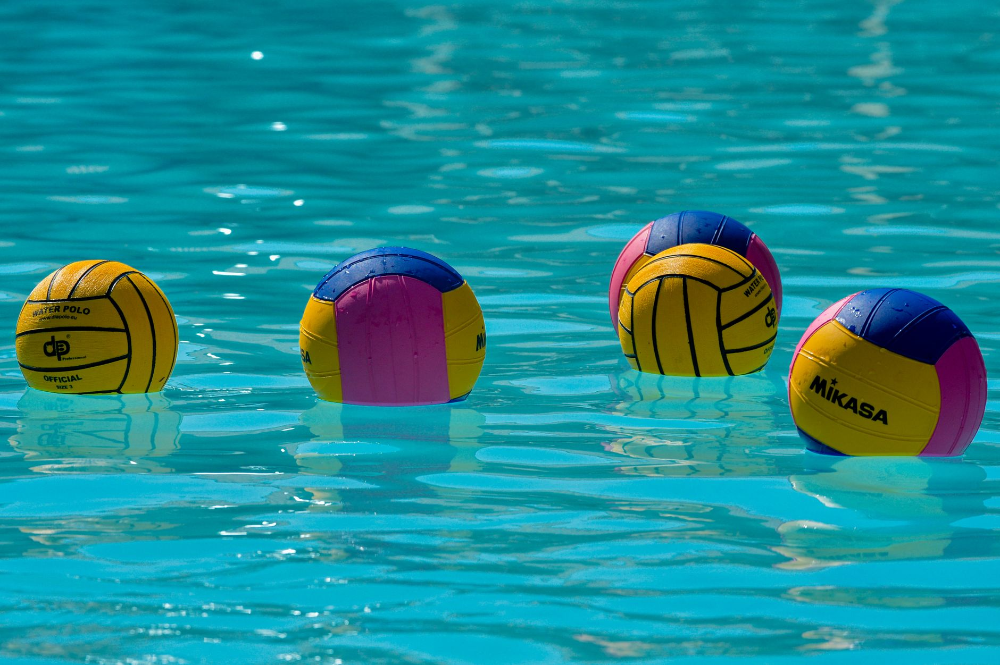

Championship Moments Start Long Before the Pool
When USC and California squared off in the 2026 NCAA Women's Water Polo Championship, fans across the country witnessed the very best that collegiate water polo has to offer. The speed, the strategy, the teamwork, and the sheer athleticism on display were the result of years of disciplined training, early morning practices, and an unwavering commitment to improvement. For young athletes right here in the Wesley Chapel and Land O' Lakes area, that championship stage is not just a dream — it is a destination that begins in a local pool.
Why Watching Elite Competitions Matters for Young Players
Exposing young athletes to high-level competition, even as viewers, is one of the most underrated tools in youth sports development. When players watch elite athletes compete, they begin to internalize what excellent technique looks like, how teams communicate under pressure, and what it means to perform with poise in high-stakes moments.
Encourage your young water polo player to watch championship highlights with intention. Ask them questions like:
- How did the goalkeeper position herself before a shot?
- What did the team do immediately after giving up a goal?
- How did players communicate across the pool during fast breaks?
These conversations turn passive watching into active learning and help young athletes build their water polo IQ long before they face similar situations in the water.
The Building Blocks Behind Every Elite Player
The players competing at the NCAA championship level did not arrive there by accident. Behind every powerful shot and precise pass is a foundation built on fundamental skills practiced thousands of times. For youth water polo players in the Tampa Bay area, that foundation is being laid right now — in every drill, every scrimmage, and every lap.
The core skills that separate developing players from elite ones include:
- Eggbeater kick strength and endurance — the engine behind nearly every action in the water
- Ball handling and passing accuracy — creating opportunities under defensive pressure
- Positional awareness — understanding where to be before the ball arrives
- Mental resilience — maintaining focus and composure after mistakes
At Nexar Aquatic Academy, our coaches build these fundamentals into every session so that young athletes are not just playing the game — they are growing within it.
The Tampa Bay Area Is a Growing Water Polo Community
Florida has steadily become a stronger presence in competitive water polo, and the Tampa Bay region is no exception. Families in Wesley Chapel, Land O' Lakes, and surrounding communities are discovering that water polo offers young athletes something rare: a sport that develops full-body fitness, sharpens strategic thinking, and builds genuine team chemistry. The sport demands both individual accountability and collective effort, making it one of the most complete athletic experiences available.
As programs continue to grow locally and college water polo expands its reach, now is an exciting time for young players to commit to their development. The athletes who were inspired by watching the 2026 NCAA Championship today could very well be the ones competing at that level tomorrow.
Let the Championship Inspire the Journey
Championships are not just endings — they are invitations. They invite young athletes to look at what is possible and ask themselves what they are willing to work for. At Nexar Aquatic Academy, we believe every player who steps into the water carries potential worth developing. The path from a local practice pool to a collegiate championship is long, but it is absolutely real.
Let the excitement of the 2026 NCAA Women's Water Polo Championship fuel your young athlete's next practice. The journey starts here, and it starts now.
Ready to get in the water?
First practice is completely FREE — no commitment needed.